I led the landing and navigation experience of Innovaccer's application suite — the front door for every login, every persona, every workflow on the platform.
As Innovaccer expanded into new verticals with its platform and applications, the navigation system that had carried it this far started to crack. It was built for one product; the platform had become many.
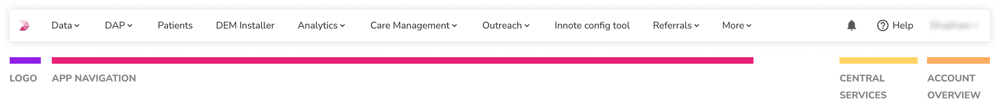
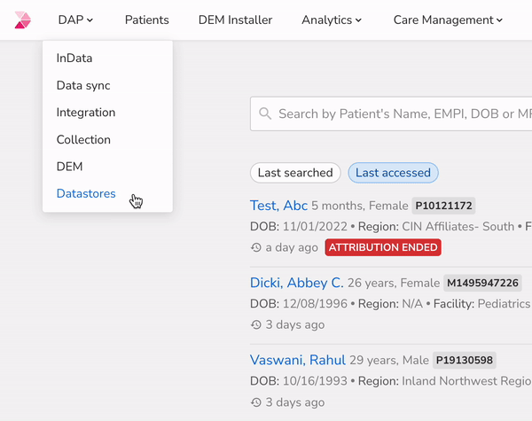
A deep-dive into permissions across personas — analysing data from 8+ customers, segregated across 12+ personas. The numbers were blunt:
Yet everyone's apps were condensed into dropdowns — a navigation model built for a breadth of access almost nobody had.
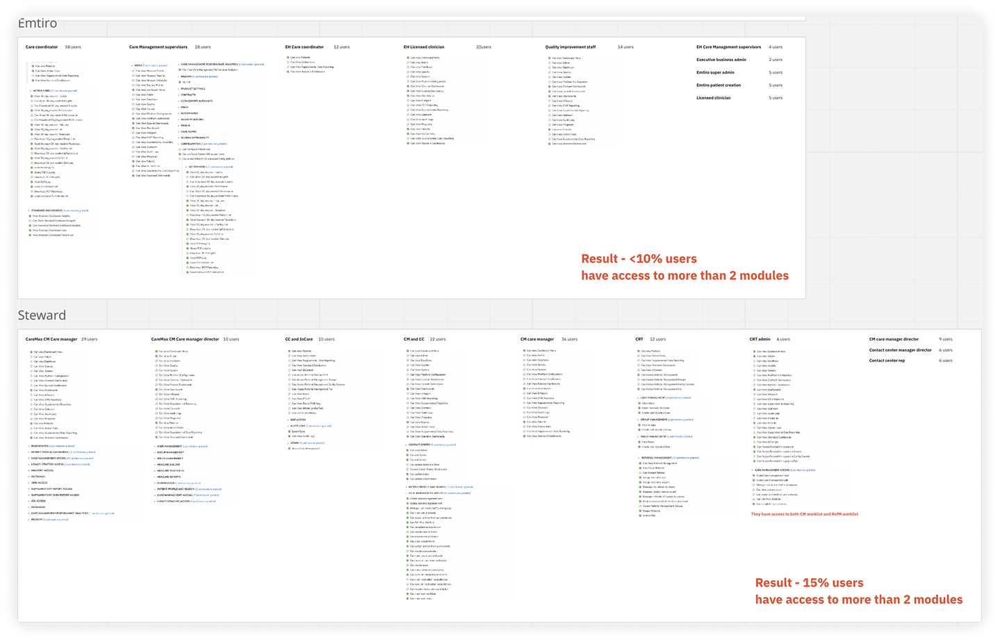
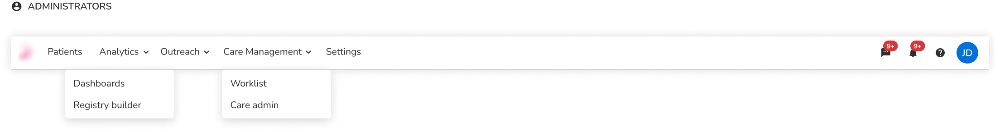
Patients and Worklist are common across healthcare personas — and often left open in a separate tab.
Application-specific configuration modules built for admins are irrelevant to generic users — yet sit in their nav.
Users with a single module still navigate through dropdown systems instead of simple nav tabs — pure frustration.
The nav is condensed into module dropdowns "for scalability" — despite users having limited access.
Third-party EMRs are used to access and feed data into the patient application.
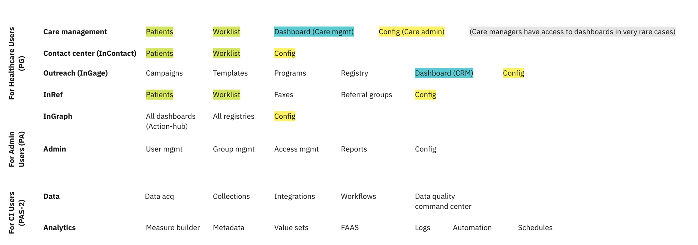
The cost of navigating between the sub-modules people use daily is high — the things they use most often stay hidden behind clicks.
A user with access to one app is still routed through the app grid instead of landing in their app. And that grid page offers nothing actionable — dead space that could personalise the sign-in journey.
Configurations are admin-specific — there's no value exposing them to generic users. Ideally, all configs sit in one place.
Patient search is used by multiple personas and sits open in other tabs. Having it always available would be a genuine win.
We needed a framework for branding and clustering applications based on what is actually available to a particular user — not on the org chart of the product.
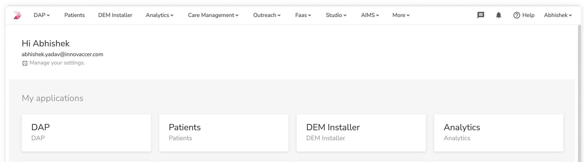
The new header splits navigation into clear zones: an app switcher for inter-app moves, flat tabs for intra-app moves, a global patient search always within reach, and central services + account tucked to the right.
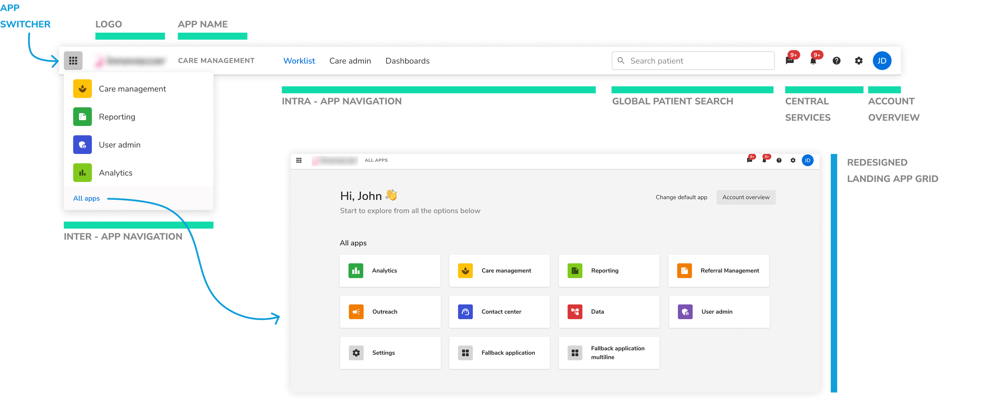
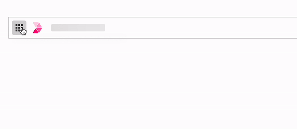
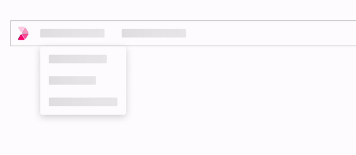
The 85%. One app means no app grid, no switcher, no dropdown ceremony — login lands you inside your application with flat tabs for its modules.
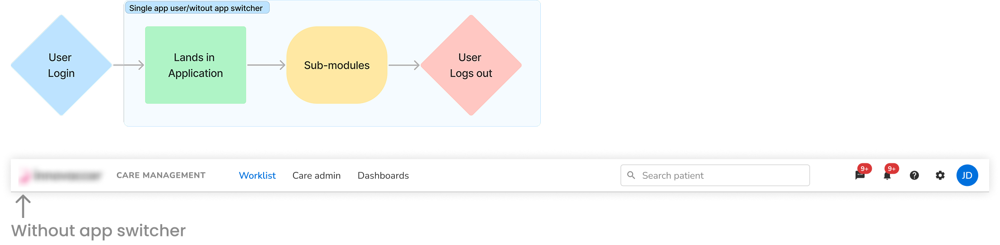
Multi-app users get a personalised landing with a default-app choice — land where you work, or in a grid of exactly your apps — plus the switcher for one-click inter-app moves.
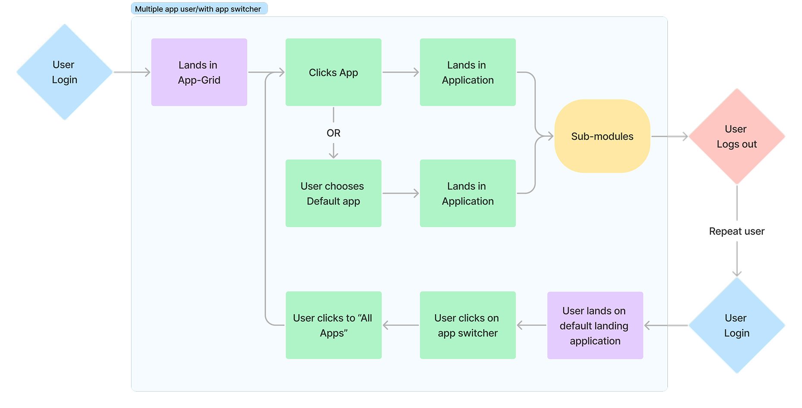
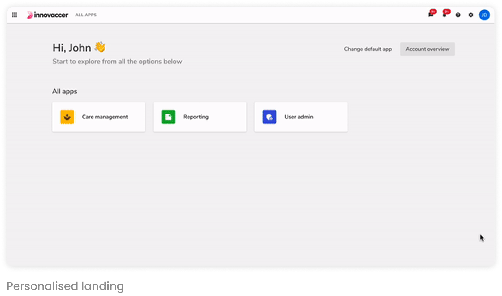
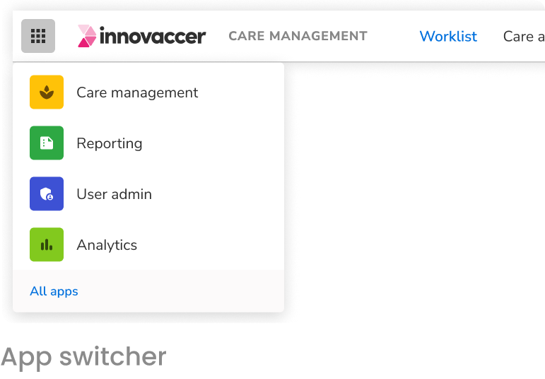
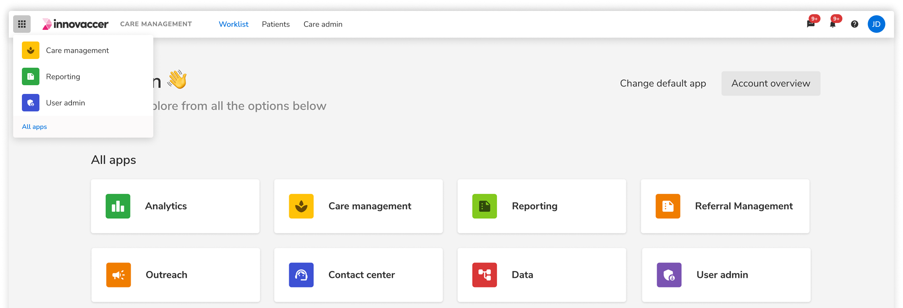
Admin config consoles across applications move into a separate tenant-configuration framework behind the settings icon — configs finally live in one place.
Patient search is used across personas — it becomes globally exposed in the header, always one keystroke away.
